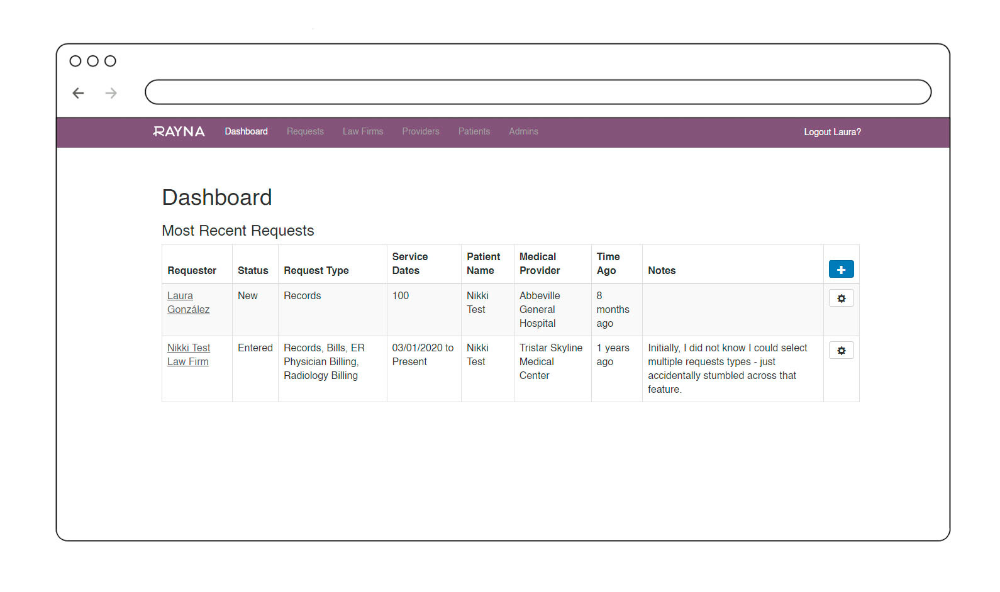
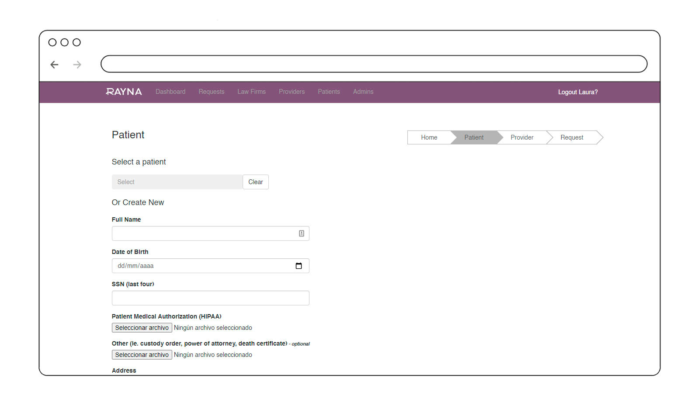
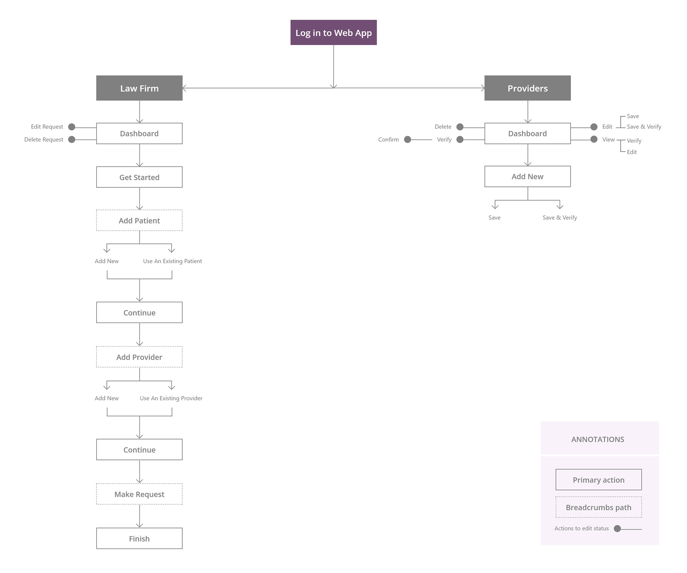
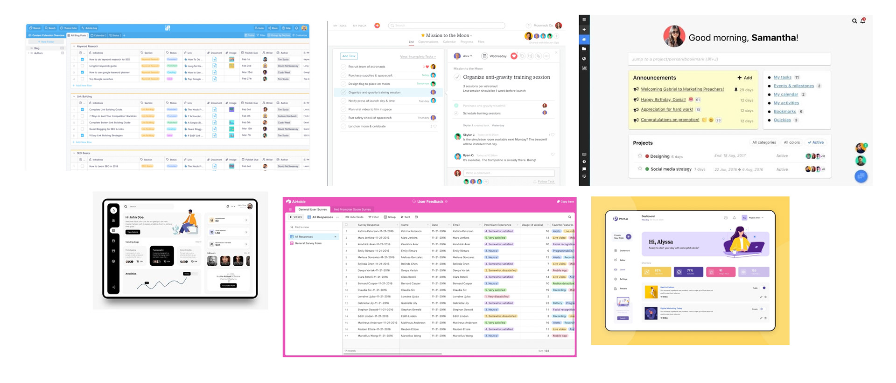
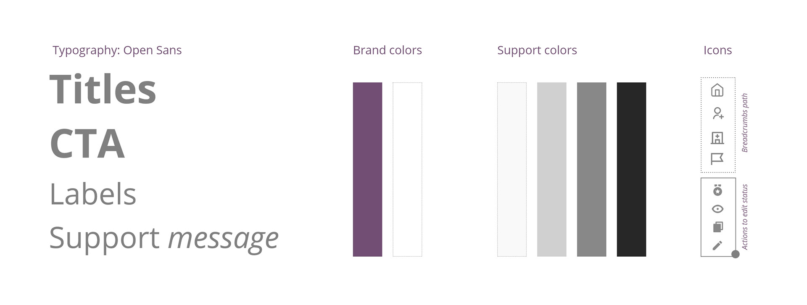
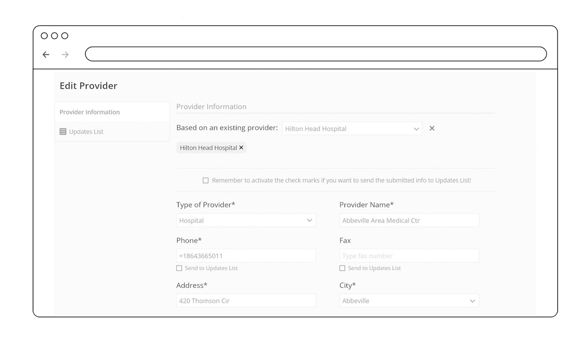

The Challenge
RayNa Corp helps law firms accelerate administrative tasks by using technology and experience to develop systems that best fit each client.
A development partner had been working on a dedicated Web App for RayNa Corp for about a year. At some point, the client reported a couple of issues — but they weren't bugs. They were poor user experience.
The project was stalled. The client wasn't satisfied, and the development team couldn't move forward without a clear direction. The goal was clear: resolve the client's objections using a UX approach, deliver a design that was easy to use for a diverse audience, and work within the existing development environment.
My Role & Approach
As UX/UI Designer, I stepped into a project that was already in progress. My role was to:
- Identify the friction points causing client dissatisfaction.
- Propose improvements that could be implemented without rebuilding the entire application.
- Bridge the gap between the development team's constraints and the client's expectations.
My approach was grounded in empathy: I needed to understand how users were actually interacting with the product, what was frustrating them, and what would make their work easier.

Discovery & Research
Before any meetings, I ran a preliminary analysis of the current Web App to get familiar with:
- Functionality
- List of features
- The issues reported at the beginning of the project


This analysis revealed that the Web App needed improvements in at least the following areas:
- Add dropdown menus to select States (instead of forcing users to type them in).
- Speed up the process with search filters and sorting.
- Use visual hints to improve communication.
Internal kick-off: We presented the demo and walked through it. In this meeting, we defined the scope, listed bugs, proposed recommendations, and prepared to move forward.
User Research & Empathy
We conducted interviews with the RayNa Corp team/users via Zoom. Additionally, Loom videos were used to record how the most common tasks were accomplished at that time.
Key insights from the interviews
- Law Firms: Allow them to update requests.
- Admins: Allow adding & updating Patient files.
- Providers: Add colored verified indicators.
- Dashboard: Add search filters & sorting across lists.
- Requests: Allow multiple providers per Request, but create separate Requests for each.
- Tracking: Keep track of every action taken by an Admin or a Law Firm.
- State selection: Use dropdown menus instead of typing.
Information Architecture & User Flow
We restructured the information architecture to support the new requirements and improve navigation.

Benchmarking
We analyzed similar products to find the best solutions for working with large amounts of data. Dashboards represented the best fit, but we needed to remain simple while still providing personality and a professional look.

Design Strategy
Key decisions
- Keep the table concept but update it with a more modern style.
- Add columns to present the most important information upfront.
- Implement search filters + search engine to manipulate data.
- Use colors as timeframes indicators (traffic light system).
- Improve iconography for better communication.
- Maintain corporate style for formality.
- Include support messages to guide users.
- Use pop-ups to prevent data loss.
Visual style
We kept the corporate colors and started working with a LoFi prototype to focus on interactions, functionality, and user flow before investing in high-fidelity visuals.


Prototype & Validation
We validated both prototypes (Law Firms & Providers flow) with the Developer Manager and Project Manager's requirements.
Prototype walkthrough
A walkthrough of the validated prototypes for both Law Firms and Providers flows.
Testing with real users
After internal approval, we ran tests with RayNa Corp actual users to observe reactions, study how tasks were completed, and collect feedback.
Feedback & Iteration
Key feedback collected from testing:
- Remove the "Last updated" column (unnecessary for the client's team).
- Add "Send Bills by" and "Send Records by" columns to the dashboard.
- Simplify verification colors: only need A) Verified within the last year, B) Verified over a year ago, C) Never verified.
- Add a "Verify" button to the dashboard screen.
- Make AKA names work as tags (since there will be more than one).
- Ensure State abbreviations are used (not full names).
- Keep "Send Bills by" and "Send Records by" at the top of the provider flow.
- Add ability to sort by multiple columns (e.g., State + Provider type).
- Ensure easy import of lists into the database.
I updated the two prototypes based on this feedback and presented them to the client. The client approved the designs, and we moved to development.
Results & Handoff
The outcome: After months of being stalled, the project was approved and successfully delivered. The client accepted the LoFi prototype with only minor tweaks — mostly on the color side. No HiFi prototype was needed.
Handoff: The Development Manager received two XD prototypes:
Key Takeaways
- Empathy is critical when a project is stalled. The client's frustration wasn't just about bugs — it was about feeling heard. Taking a UX approach meant understanding their pain points and showing them we were listening.
- Balance is everything. My attention was always divided between the development team's constraints and the client's expectations. Finding that balance was key to moving forward.
- LoFi is enough — if it's thoughtful. We didn't need a HiFi prototype. A well-structured, validated LoFi prototype was enough to build trust and get approval.
- Testing with real users changes everything. The feedback we collected from testing was invaluable. It helped us refine the product and gave the client confidence that their needs were being addressed.